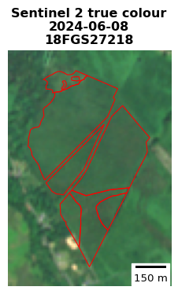

| Year | S1 images used |
|---|---|
| 2018 | 2097 |
| 2019 | 2188 |
| 2020 | 2338 |
| 2021 | 2324 |
| 2022 | 1178 |
| 2023 | 1171 |
| 2024 | 1112 |
Sentinel 1 Forestry Grant Scheme Analysis
1 Introduction
A time series of Sentinel 1 Synthetic Aperture Radar (SAR) Ground Range Detected (GRD) images was explored against Scottish Forestry grant scheme polygons. The aim was to explore how a time series of Sentinel 1 images over several years might be analysed to detect that grant-funded trees have been planted and are growing in the first few years after planting. Immediately after planting, trees are too small to be discerned on Sentinel 2 optical imagery (10m) and 3-4 metre Planet Scope imagery.
Radar imagery is well suited to time series analysis because it isn’t affected by cloud cover. In Scotland, Sentinel 1 images are available at least weekly. With the Sentinel-1 satellites now operating for nearly 10 years, a substantial time series can be extracted for analysis. While Sentinel-1 radar backscatter may not directly detect newly planted trees, ground disturbance from operations like ploughing, ripping, and mounding before planting may be detected early on and provide useful information that tree planting operations have started.
Monitoring these patterns in Sentinel 1 is dependent on administrative grant polygon data. The grant boundaries provide small targeted windows for image pixel extraction making data processing easier. They also provide fixed spatial units for analysing radar-backscatter over time and applying statistical techniques.
2 Forestry Grant Scheme polygons
Forestry Grant Scheme Claims are available for download from the Scottish Forestry Open Data Portal.
For this initial study, the set of grant schemes analysed were:
Claim year 2018 (claim year is the financial year work will be completed and grant claimed).
Options: Conifer (the most frequent type) and Broadleaves / Native Broadleaves. The Native Broadleaves grant option is more frequent than just Broadleaves, so the two were combined as one ‘Broadleaves’ category here.
The aim was to extract a time series of Sentinel 1 imagery pixel values (backscatter in VV and VH polarisations) for these polygons. To make the imagery extraction process easier, multipart grant polygons were exploded to single part and only polygons of >= 0.5 ha were analysed.
Claim year 2018 was chosen as this coincided with the earliest full year of JNCC’s Analysis Ready Sentinel 1 imagery.
Images were extracted and analysed for 1128 conifer grant schema polygons and 522 broadleaved.
3 Sentinel 1 Analysis Ready GRD imagery
Defra / JNCC have prepared Analysis Ready Sentinel 1 GRD imagery and this is available on the CEDA Archive. Details of the post-processing steps taken by JNCC to make the analysis ready product are available in the user guidance.
The first complete year of imagery was 2018 and it is still being added to currently, in 2025. For this analysis, images available from 1 January 2018 to 31 December 2024 were used.
As Sentinel 1 Radar imagery are not affected by cloud cover, all available images can be extracted and used.
In total 12408 images were used from 2018 - 2024 from the Sentinel 1 JNCC ARD archive covering the forestry grant schemes selected. As shown in Table 1, the number of images per year approximately halved after 2021 when the Sentinel 1B satellite suffered a power supply issue.
A dedicated analysis environment is not available for processing the JNCC / Defra ARD imagery. Custom code was created to extract image arrays for the grant polygons and ran on a local laptop. It took more than 24 hours to extract the 7 years of Sentinel 1 imagery for 1128 conifer grant polygons.
4 Sentinel 1 Imagery Details
It is important to understand some features of the Sentinel 1 imagery used in this analysis:
SAR imagery is a side looking senor. Images are captured on the ascending and descending orbit passes of the satellite. It is important to consider ascending and descending images separately as they can show different backscatter values, particularly where the ground is not flat. Ascending and descending images are typically captured on separate days. An example is shown in Figure 1 and can be contrasted with Figure 2, a true colour Sentinel 2 image of the same location.
The JNCC Sentinel 1 ARD imagery is provided in 10m resolution and in VV and VH polarisations. The VV polarisation is the vertical transmit and vertical receive polarisation and VH is vertical transmit and horizontal receive. These means for any location on the ground we may consider four values from Sentinel 1: VV ascending, VH ascending, VV descending, VH descending.
In the Sentinel 1 GRD collection processed by JNCC, pixel values represent radar backscatter intensity in decibels (dB). The values are in a logarithmic scale, indicating the strength of the returned radar signal. Higher backscatter values suggest stronger surface reflections, which can be influenced by factors such as surface roughness, vegetation structure, and moisture content.
In generally, backscatter is higher in each polarisation from mature standing trees than from bare ground or open fields. The VV polarisation is more sensitive to regular, man-made structures like buildings. The VH polarisation is more sensitive to volume scattering from vegetation. Generally, the VH polarisation is more sensitive to irregular surfaces like forests.


5 Conifer grants time series analysis
5.1 Creating the time series
For the 1128 conifer grant polygons of claim year 2018 (after exploding multiparts and removing parts < 0.5 ha), 7 years of Sentinel 1 images 2018 - 2024 were extracted as masked arrays. The image date and ascending or descending orbit information were retained, so it was possible to construct a time series and analyse the two orbits separately.
A median of the pixel values per grant polygon feature was taken. This resulted in a pair of VV and VH values per image date, for each image intersecting each of the 1128 polygons over the 7 years.
The full time series of all images for a feature has a lot of noise as shown in the example Figure 3. Sentinel 1 and SAR images have a feature known as speckle.
The noisy time series can be smoothed by taken a monthly median of the feature values. The result for the same example feature is shown in Figure 4.
5.2 Observed trends
By reviewing the monthly median time series for a number of different conifer grant polygons, two general trends are apparent in some, but not all sites:
The time series often shows a spike in winter / spring 2018 or 2019 and always seen before spring 2020. This spike is mainly visible in the VV polarisation, not VH. This is thought to be the ground preparation for planting (mounding, ploughing, ripping). It makes sense this is visible mostly in VV which is known to be more sensitive to regular, man-made features, whereas VH is more sensitive to changes in vegetation.
The time series over 7 years shows an upward trend in backscatter, particularly in years 2020 - 2024. This is generally stronger in VH polarisation and this is assumed to be as the trees become established they are responsible for greater backscatter, particularly seen in VH.
5.3 Quantifying the time series trends
The aim is to quantify the two time series trends for all grants. Specifically, to determine:
How many of the 1128 conifer grant polygons with claim year 2018 show a spike in VV by March 2020, which may indicate ground preparation for tree planting.
A general increase in backscatter in both polarisations, but particularly in VH indicating trees are growing and a tree canopy is developing.
5.3.1 Quantifying potential ground preparation spike in VV backscatter
In this early exploration, a very simple statistical method was applied to the time series. By converting the monthly time series into z-scores, it is possible to analyse individual monthly spikes in VV in the first two to three years from 2018. Using a z-score means a spike in backscatter can be found for a site relative to its seven year time series, rather than applying a fixed decibel threshold across all sites.
The z-score formula is:
\[ z = \frac{x - \mu}{\sigma} \]
where:
- \(x\) is the observed median back scatter for a given month,
- \(\mu\) is the mean of the monthly backscatter values over the entire time series,
- \(\sigma\) is the standard deviation of these monthly backscatter values.
A z-score threshold of 2.0 was used. A value above this (i.e. \(z\) > 2) indicates that the monthly backscatter is more than two standard deviations above the mean, suggesting a time series spike. A z-score of 2 is not an extreme outlier in a normal distribution. However, as backscatter values naturally increase in the later years of the seven-year time series (as tree growth progresses), it was felt a threshold of \(z\) = 2 was suitable for this analysis applied to the first two years.
If the January 2018 to March 2024 monthly median values do not have a spike in VV that is z-score of 2.0 or greater then this might show no ground preparation for conifer planting has occurred in the location.
Figure 5 shows a time series of monthly Z-score values for the same site as Figure 4.
Z-scores were calcuated per grant polygon for VV and for VH for ascending and descending orbits. The percentage of the 1128 conifer 2018 claim polygons having a z-score of 2.0 or greater (in either orbit) at three annual intervals to 31 March 2020 are shown in Table 2.
| Date to | VV Spike (%) | VH Spike (%) |
|---|---|---|
| 2018-03-31 | 11.44 | 3.72 |
| 2019-03-31 | 76.68 | 28.28 |
| 2020-03-31 | 83.95 | 34.22 |
The results in Table 2 show a clear difference between VV and VH polarisations, with VV much more likely to exhibit a spike in backscatter during the first couple of years after a conifer grant claim. Over 80% of 1128 sites showing the spike in VV means it seems likely they are due to a change on the ground. It may be because the sensor is detecting ground preparation activities carried out before conifer planting. This interpretation would be consistent with the fact that VV polarisation is generally more sensitive to regular textures associated with man-made features.
However, before drawing firm conclusions, it would be important to repeat the analysis for other grant claim years, as well as for nearby sites where no tree planting took place. Speaking with staff at Scottish Forestry to understand a typical operational cycle of conifer planting would also be helpful.
5.3.2 Quantifying general increase in backscatter over the time series
Another trend observed in the time series was a general increase in backscatter over the seven-year period, particularly in the VH polarisation. This is likely associated with the growth and establishment of conifers. As the canopy develops, it introduces more volume scattering from branches and leaves, which contributes to increased diffuse backscatter in the cross-polarised (VH) channel.
To prepare the seven-year time series for trend analysis, it is first important to reduce the influence of seasonal variation. In general, the conifer planting sites show higher backscatter in both VV and VH during winter compared to summer. However, this pattern is not consistent across all sites, as illustrated in the example in Figure 4, where a VH peak is seen in June 2020. Given this variability, a seasonal decomposition method was not applied. Instead, a 12-month rolling median was used to smooth the time series. The effect of this rolling median on the example site is shown in Figure 6.
After smoothing the monthly median time series using a 12-month rolling median, linear regression was applied to assess the strength and statistical significance of trends in backscatter. For the 2018 conifer grant sites, the analysis was restricted to 1 January 2020 to 31 December 2024, rather than using the full time series starting in 2018. This excludes the initial spike—particularly evident in VV backscatter described previously. No trend was expected in the first couple of years immediately following planting, so the 2020 starting point for 2018 claim year grants seemed reasonable.
Separate linear regressions were fitted to the VV and VH backscatter time series for each site (conifer grant polygon), and for each orbit (ascending and descending) independently.
The regression results were then summarised to report the percentage of sites that showed a positive trend with a p-value below 0.05 in either orbit. These results for VV and VH are presented in Table 3.
| Polarisation | % Sites Positive Trend (where p < 0.05) | Mean Slope (where p < 0.05 and +ve) |
|---|---|---|
| VV | 50.98 | 0.0176 |
| VH | 90.16 | 0.0247 |
As seen in Table 3, 90% of the 2018 claim conifer grant sites showed a statistically significant positive trend in VH backscatter since January 2020. In contrast, only 51% of sites showed a comparable trend in VV backscatter. The mean trend or slope is also less strong for VV. This shows that for monitoring grant sites in the longer term VH is more useful than VV and agrees with what is described elsewhere that VH is more sensitive to tree and vegetation growth.
6 Broadleaves time series analysis
6.1 Creating the time series
The same process applied to conifers was repeated for broadleaves / native broadleaves grants:
- In total 522 broadleaved grant polygons with claim year 2018 were analysed (after exploding multiparts and removing parts < 0.5 ha).
- 7 years of Sentinel 1 images 2018 - 2024 were extracted for these polygons as masked arrays.
- Time series were contstructed separately for ascending and descending orbits and then convered into monthly medians. An example is shown in Figure 7.
6.2 Observed trends - broadleaves
- The spike in VV polarisation - seen for conifers in the first couple of years January 2018 to March 2020 - was not seen as frequently for broadleaves.
- There was a gradual increase in backscatter observed over the last few years, particularly in VH polarisation. This was not as strong a trend as for conifers, probably because broadleaves take longer to become established and grow.
6.3 Quantifying the time series trends - broadleaves
The same simple statistical analyses were repeated for the broadleaved grants. With more time to explore the patterns, it might be that specific processes could be developed for broadleaves. Working with Scottish Forestry staff to understand the planting process on the ground would help.
Firstly the conifer z-score process was repeated, looking for VV and VH spikes before 31 March 2020.
| Date to | VV Spike (%) | VH Spike (%) |
|---|---|---|
| 2018-03-31 | 12.84 | 2.49 |
| 2019-03-31 | 49.23 | 18.58 |
| 2020-03-31 | 63.98 | 27.97 |
For VV polarisation the Z-score >= 2 spike was observed for 20% fewer sites for broadleaves (64% compared to 84% for conifers). It is assumed the same ground prepartion tasks are not frequently carried out for broadleaves.
A 20% difference in the occurence between conifer and broadleaved sites is perhaps not as great as expected. We would need to learn more about the difference in planting practices from Scottish Forestry.
6.3.1 Quantifying general increase in backscatter over the time series - broadleaves
As described for conifers, the next analysis was to quantify the number of broadleaved grant sites showing an increase in VV and VH using linear regression. The same process was applied to the broadleaved sites, firstly a monthly smoothing as shown in Figure 8 for the same example plotted in Figure 7.
It can be seen in Figure 8 when compared with a conifer example in Figure 6 that the positive trend might be less strong for broadleaves, probably because the trees grow more slowly.
For each site, a linear regression was applied to the backscatter values from 1 January 2020 to 31 Dec 2024 (after smoothing with the rolling monthly median). This means results in Table 5 for broadleaves are directly comparable with those for conifers (in Table 3). Table 5 shows the proportion of the 522 broadleaved sites having a significant (p < 0.05) positive trend.
| Polarisation | % Sites Positive Trend (where p < 0.05) | Mean Slope (where p < 0.05 and +ve) |
|---|---|---|
| VV | 56.51 | 0.0144 |
| VH | 82.18 | 0.0190 |
7 Control sites time series analysis
7.1 Selecting control sites
To help understand whether the trends observed for conifer and broadleaved grants were unique to sites where trees had been planted at the start of the time series, a set of control sites were selected.
A total of 500 control sites were analysed. The control sites were grant sites with a 2024 claim year. This means sites that will not have had trees planted until at least the last year of the 2018 - 2024 time series.
The benefit of using 2024 claim year sites is that these control sites are likely to have similar characteristics to the 2018 planted sites, e.g. soil type, land use, topography, climate. If the control sites were very different in land use or other geophysical characteristics, then the comparison would be less valid. For example, we want control sites where the summer vegetation growth will be similar to the tree-planting sites.
To match the conifer and broadleaved sites analysed in this work, multiparts were exploded and only parts over 0.5 ha were retained. A sample was taken - one from each unique grant reference and then a random selection to make 500.
7.2 Quantifying the time series trends - broadleaves
The same statistical analyses were applied to the control sites as described for conifers and broadleaves.
7.2.1 Control sites VV spike by 31 March 2020
The first analysis was to look for spikes in VV and VH backscatter before 31 March 2020 using the Z-score method.
42% of control sites showed a VV spike before 31 March 2020, compared to 64% of broadleaved sites and 84% of conifer sites. 42% is higher than expected if we wish to assume that the spike is associated with preparation activity on the ground before planting. This indicates a spike in a time series of VV alone is not a reliable predictor of ground preparation activity.
| Date to | VV Spike (%) | VH Spike (%) |
|---|---|---|
| 2018-03-31 | 11.20 | 9.00 |
| 2019-03-31 | 19.00 | 21.80 |
| 2020-03-31 | 41.80 | 38.20 |
7.2.2 Control sites trend Jan 2020 - Dec 2024
As for conifer and broadleaved 2018 claim year sites, a linear regression was fitted to the smoothed time series for each control site from 1 January 2020 to 31 December 2024.
| Polarisation | % Sites Positive Trend (where p < 0.05) | Mean Slope (where p < 0.05 and +ve) |
|---|---|---|
| VV | 58.20 | 0.0195 |
| VH | 75.20 | 0.0198 |
75% of control sites showed a significant positive trend in VH backscatter from January 2020 to December 2024. This is compared to 90% for conifer and 82% for broadleaved planting sites. The mean rate of increase in VH backscatter is very similar for control and broadleaved sites and only slightly greater for conifers.
It is not known why the control sites show a significant positive trend in VH backscatter on a smoothed time series from 2020 to 2024. No planting activity should have occurred on these sites until 2024 at the earliest. It could be due to changes in the Sentinel 1 sensor (e.g. backscatter increases everywhere over these four years due to changes in the sensor calibration). It could be changes in image post processing or JNCC’s analysis ready data pipeline. Alternatively, it could be due to climatic factors in Scotland over this period for example if drier summers in 2022-2024 than 2020-2021.
8 Conclusions
Sentinel-1 GRD imagery, provided for Scotland by JNCC via the CEDA archive, allows for the construction of a 7-8 year time series of radar backscatter for any location. Because radar imagery is unaffected by cloud cover, the weekly Sentinel-1 images available over Scotland create a dense time series. To reduce the effect of ‘speckle’ (noise) in the radar imagery, we calculated medians, both spatially across site boundaries and temporally using monthly intervals.
This analysis found that a spike in VV backscatter is often observed, particularly at conifer planting sites, within the first couple of years after planting. This spike is presumed to be caused by ground preparation activities, such as ploughing and mounding. We used a simple Z-score method to identify these spikes in both VV and VH backscatter. For example, 90% of 2018 conifer planting sites showed a VV spike before 31 March 2020, compared to 64% of broadleaved sites and 42% of control sites (where planting was not expected until 2024 at the earliest).
Whilst the greater occurrence of VV spikes at conifer sites suggests a link to ground preparation activity, the fact that 42% of control sites also showed a spike indicates that a VV time series spike alone may not be a reliable indicator of this activity.
Scottish Forestry staff have since indicated that early field inspections are conducted at the time of the grant payment claim. Consequently, the business case for using remote sensing to detect the start of planting on the ground appears to be weaker than originally thought when developing this method.
Scottish Forestry’s stronger business need seems to be confirming, 3-5 years after a grant claim, that the trees are successfully established and growing. However, so far, the increase in VH backscatter observed at conifer and broadleaved sites does not appear to be unique to them. A significant positive trend in VH backscatter was also recorded for 75% of control sites, where no planting was anticipated until 2024 at the earliest.
Both methods require further exploratory analysis, beginning with extracting a range of statistical properties from the grant sites beyond spatial and temporal medians. To assist with this, an interactive tool could be developed. This tool would allow users to zoom to a specific site and explore different statistical and temporal patterns in VV and VH backscatter, with the same for neighbouring non-planted sites available for immediate comparison.
This tool should help to identify common patterns for planted sites that could form the basis for developing a predictive model. It should also build a better understanding of how to interpret the backscatter time series and relate the patterns to events on the ground. Traditional machine learning classification methods could then be used to select the features best suited to separating conifer or broadleaved planting sites from non-planted sites. Ultimately, it appears unlikely that using Sentinel-1 data alone will be sufficient. Incorporating propeties of higher resolution optical imagery and lidar data will therefore need to be part of the solution.